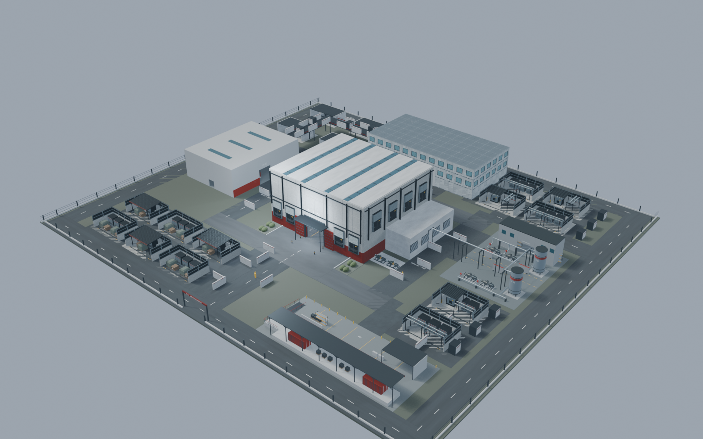
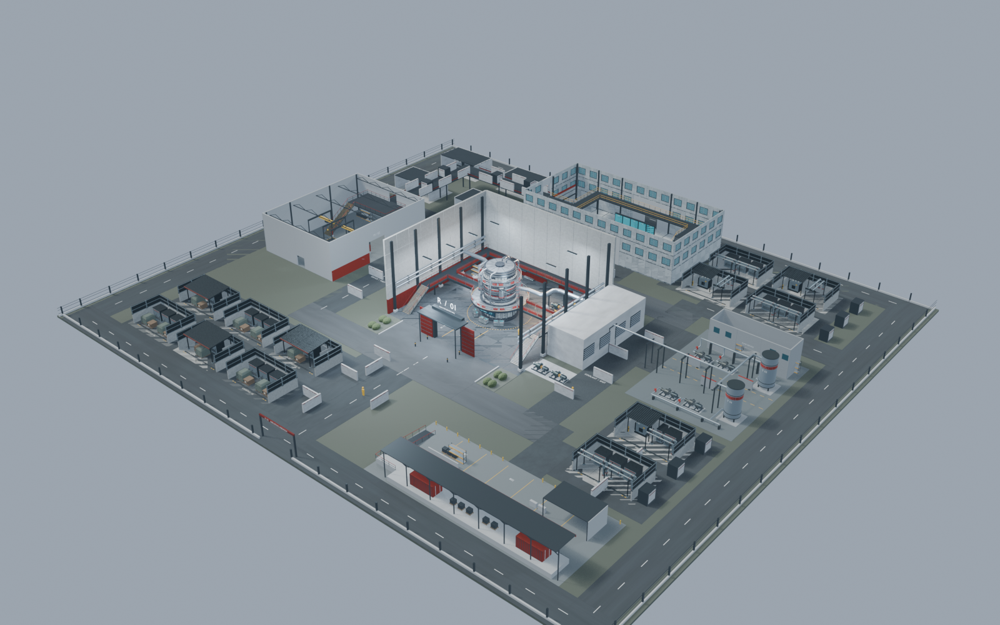
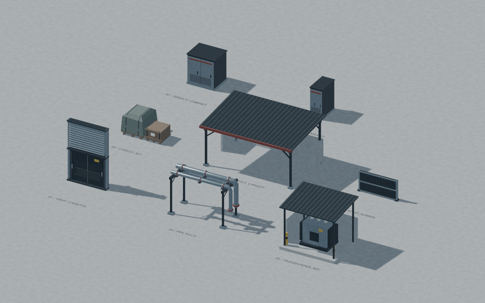

NUCLEARPLANT / CUMULATIVE BATCH 01–07
7个模块家族 + 1个窄柜派生变体，3个精化分块。全部历史模块与地图仍保留，不依赖单独下载旧包。
完整地图 Blend · 全部模块 · 恢复/重建说明 · 本轮视图 · 独立QA



完整图为原生Blend，GLB覆盖当前模块；Batch06整图GLB/FBX明确为旧版本。静态几何和视线检查不是UE运行、导航或官方Manny网格验收。